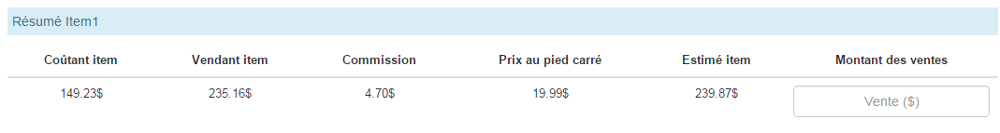
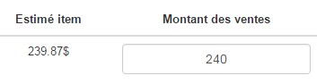
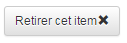
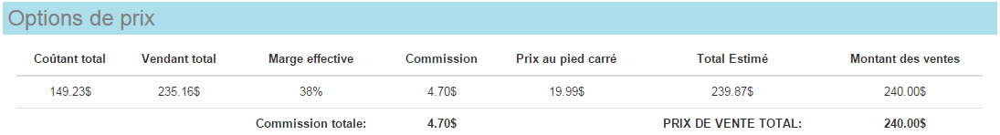

Module de Soumission Rapide Flexible
Ce module permet de remplir une soumission avec calcul d'estimation automatique. À la fin, la soumission peut être imprimée et transférée dans Access (pour mise en production).
NOTE: dès qu'une modification est faite dans le formulaire, les calculs s'ajustent automatiquement. L'information affichée est donc toujours à jour.
- Pour accéder au module de Soumission Rapide, cliquer sur le lien Soumission

- Le formulaire de soumission apparaît.
- Dans la section Entête, entrer le Nom du Projet.

- NOTE: on peut se déplacer par clavier entre les champs du formulaire avec la touche de tabulation (TAB). Cette touche se trouve à gauche de votre clavier, généralement au-dessus du caps lock (touche de verrouillage majuscule ou MAJ)
- Choisir ensuite un représentant dans la liste déroulante Représentant (ou commencer à taper son nom).
- Choisir ensuite un client dans la liste déroulante Client (ou commencer à taper le nom du client).
- Si les coordonnées du Contact client sont connues, vous pouvez les entrer dans la ligne des coordonnées du contact, mais elles demeurent facultatives. Pour le téléphone, le format accepté est xxx-xxx-xxxx (on accepte aussi le point "." ou l'espace à la place du tiret "-"). Pour l'email, le format accepté doit comprendre au moins le caractère "@" et un point suivi d'au-moins 2 caractères pour l'extension (.com, .org, .ca)

- Champ Date Requise : choisir la date requise par votre client (date désirée de livraison par exemple) en cliquant sur le bouton avec l'icône de calendrier à droite du champ.
 Un petit calendrier apparaît et vous pouvez sélectionner le mois, le jour ou même l'année. En cliquant sur une journée, le calendrier se ferme et la date choisie apparaît dans la boîte du champ.
Un petit calendrier apparaît et vous pouvez sélectionner le mois, le jour ou même l'année. En cliquant sur une journée, le calendrier se ferme et la date choisie apparaît dans la boîte du champ. - Champ Date d'Estimation : ce champ est rempli automatiquement avec la date du jour.
- Dans la section Détail des items, on spécifie le matériel est les mains d'oeuvres pour l'item.
- Dans la sous-section Description Item, on entre la quantité, les dimensions en pouces et la perte pour l'item. Les superficies se calculent automatiquement. On peut également choisir un mode Recto-Verso (facultatif).

- Dans la sous-section Matériel, on choisit un produit spécifique dans la liste déroulante Produit. La liste déroulante Support peut servir à filtrer un certains type de produit (par exemple, seulement les bannières ou les vinyles autocollants). Par défaut, tous les produits flexibles sont listés.

- Dès qu'un matériel est choisi, on voit s'afficher automatiquement des informations concernant le produit, ainsi qu'un calcul du prix coûtant et du prix de vente, calculé selon les dimensions de l'item entrés à la section Description Item. Si jamais ces dimensions sont modifiées, le calcul de la section Matériel se met à jour.

- Dans la sous-section Imprimante, on choisit dans la liste déroulante Imprimante, la machine qui va servir à imprimer : seulement les machines compatibles avec le produit choisi seront listées.
 Le calcul du prix de l'impression est affiché en-dessous de l'imprimante choisie.
Le calcul du prix de l'impression est affiché en-dessous de l'imprimante choisie. - Dans la sous-section Infographie, on ajoute automatiquement un temps minimal d'infographie. On peut ajuster simplement le nombre de visuels, et cela ajuste automatiquement le temps et le coût requis.
 (en-bas de 3 visuels, ne change pas le temps; le nombre de visuels est en général égal ou plus petit que la quantité d'items)
(en-bas de 3 visuels, ne change pas le temps; le nombre de visuels est en général égal ou plus petit que la quantité d'items) - Dans la sous-section Main d'oeuvre, on ajoute automatiquement un temps minimal de main d'oeuvre et du matériel d'emballage. Si jamais l'item à produire nécessite du temps supplémentaire de main d'oeuvre vous pouvez sélectionner un temps extra dans la liste déroulante de la colonne Temps / Quantité.

- Dans la sous-section Finition, vous pouvez spécifier une finition si applicable.
- Si applicable, la liste déroulante du Type vous permet de choisir un type de finition :

- Ensuite, la liste déroulante des Côté(s) vous permet de choisir sur quels côtés appliquer la finition :

- Le calcul total de la finition se fait automatiquement.

- Dans la sous-section Laminage, la liste déroulante dans la colonne Type contient les laminages qui peuvent s'appliquer au produit choisi (parfois aucun laminage n'est applicable).
 Dès qu'un laminage est choisi, on voit apparaître le calcul d'estimation automatique dans une table:
Dès qu'un laminage est choisi, on voit apparaître le calcul d'estimation automatique dans une table: 
- En-dessous de toutes les sous-sections se trouve un tableau résumant les coûts totaux de l'item.  Pour le vendeur, l'information importante est la commission calculée ainsi que le total estimé. Dans la case Montant des Ventes, il faut entrer un prix de vente qui sera nécessairement plus grand que l'estimé de l'item. 
- Ajouter un item : cliquer sur le bouton

- Retirer un item : pour retirer un item de la soumission, cliquer sur le bouton 
- Dans la section Options de prix, est présenté le résumé de toute la soumission.  Dans cet exemple, il est égal au résumé de l'item 1 puisqu'on n'a qu'un seul item. Par contre, si on avait 2 items ou plus, on aurait ici la somme des coûts de tous les items.
- Lorsque tout le formulaire est bien complété, on peut alors choisir de Sauvegarder la soumission. Ceci a pour effet : a) de créer une nouvelle soumission dans Access avec les informations du formulaire et b) d'afficher une page imprimable qui contient les détails de la soumission pour envoyer au client.
ATTENTION : en cliquant sur le bouton Sauvegarder la soumission vous ne pourrez plus éditer le formulaire, car une nouvelle page sera présentée. Par contre, la soumission aura été créée dans Access où vous pourrez la modifier et la mettre en production comme d'habitude.

- Après avoir cliqué sur le bouton Sauvegarder, la page de soumission client s'affiche : cette page peut être imprimée pour envoi au client. Notez le numéro de la soumission affiché au coin supérieur droit de la page (encerclé en rouge sur l'image ci-dessous).